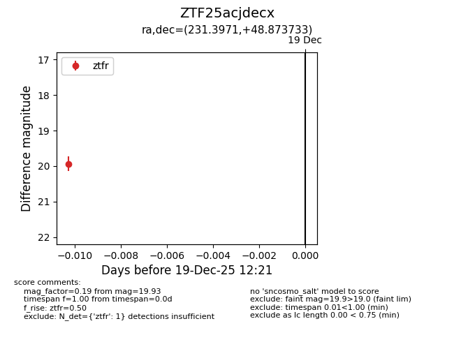
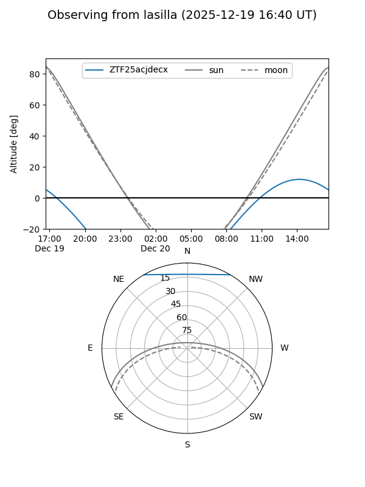
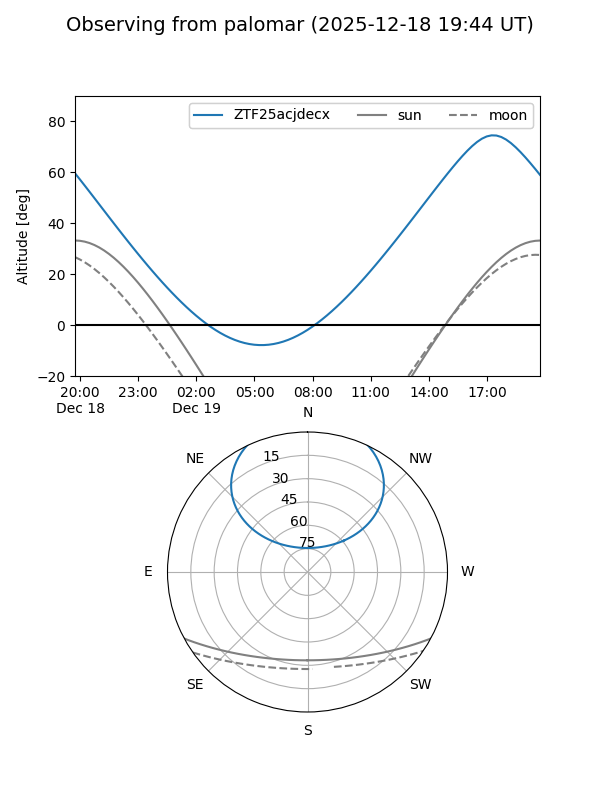

ZTF25acjdecx
Target ZTF25acjdecx at 2025-12-19 13:27
Aliases and brokers:
FINK: fink-portal.org/ZTF25acjdecx
Lasair: lasair-ztf.lsst.ac.uk/objects/ZTF25acjdecx
ALeRCE: alerce.online/object/ZTF25acjdecx
alt names
ZTF25acjdecx (ztf,fink_ztf)
Coordinates:
equatorial (ra, dec) = 231.3971,+48.87373
equatorial (HMS+DMS) = 15:25:35.31,+48:52:25.44
galactic (l, b) = (79.6949,+53.25883)
Flags:
Photometry:
last ztfg=20.14, ztfr=19.93
1 ztfg, 1 ztfr detections
Lightcurve

Visibility


Additional plots